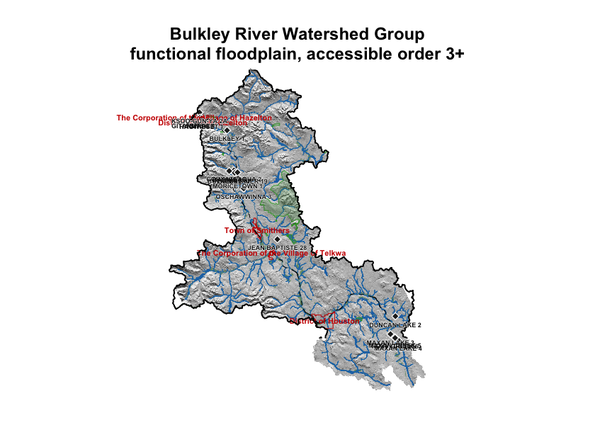
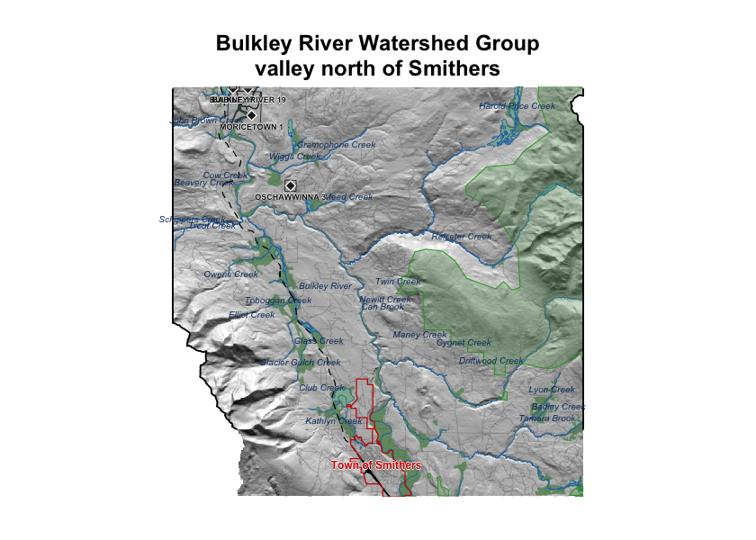

Appendix - Floodplain Delineation
gpkg <- "data/gis/bulk.gpkg"
dem_tif <- "data/gis/bulk_dem.tif"
# `co_ff04` is the layer name as published on stac-floodplains-bc — coho
# accessible network, flood factor 4. Kept unchanged so the cached copy is
# traceable to its catalogue item without a lookup.
fp_layer <- "co_ff04"
present <- sf::st_layers(gpkg)$name
load_layer <- function(name) {
if (name %in% present) sf::st_read(gpkg, layer = name, quiet = TRUE) else NULL
}
aoi <- load_layer("aoi")
streams <- load_layer("streams")
waterbodies <- load_layer("waterbodies")
floodplain <- load_layer(fp_layer)
railways <- load_layer("railways")
roads <- load_layer("roads")
reserves <- load_layer("reserves")
parks <- load_layer("parks")
named_streams <- load_layer("named_streams")
municipalities <- load_layer("municipalities")
dem <- terra::rast(dem_tif)
dem <- terra::mask(terra::crop(dem, terra::vect(aoi)), terra::vect(aoi))
streams <- suppressWarnings(sf::st_intersection(streams, aoi))
waterbodies <- suppressWarnings(sf::st_intersection(waterbodies, aoi))
floodplain <- suppressWarnings(sf::st_intersection(floodplain, aoi))
if (!is.null(roads)) roads <- suppressWarnings(sf::st_intersection(roads, aoi))
if (!is.null(railways)) railways <- suppressWarnings(sf::st_intersection(railways, aoi))
if (!is.null(reserves)) reserves <- suppressWarnings(sf::st_intersection(reserves, aoi))
if (!is.null(parks)) parks <- suppressWarnings(sf::st_intersection(parks, aoi))
if (!is.null(named_streams)) named_streams <- suppressWarnings(sf::st_intersection(named_streams, aoi))
if (!is.null(municipalities)) municipalities <- suppressWarnings(sf::st_intersection(municipalities, aoi))aoi_area_km2 <- as.numeric(sum(sf::st_area(aoi))) / 1e6
fp_area_ha <- as.numeric(sum(sf::st_area(floodplain))) / 1e4
fp_pct_aoi <- 100 * fp_area_ha / (aoi_area_km2 * 100)
streams_in_fp <- suppressWarnings(sf::st_intersection(streams, floodplain))
streams_km_total <- as.numeric(sum(sf::st_length(streams))) / 1e3
streams_km_in_fp <- as.numeric(sum(sf::st_length(streams_in_fp))) / 1e3
wb_in_fp <- suppressWarnings(sf::st_intersection(waterbodies, floodplain))
lakes_n <- sum(wb_in_fp$waterbody_type == "L", na.rm = TRUE)
wetlands_n <- sum(wb_in_fp$waterbody_type == "W", na.rm = TRUE)
lakes_ha <- as.numeric(sum(sf::st_area(wb_in_fp[wb_in_fp$waterbody_type == "L", ]))) / 1e4
wetlands_ha <- as.numeric(sum(sf::st_area(wb_in_fp[wb_in_fp$waterbody_type == "W", ]))) / 1e4This appendix details the floodplain delineation for the Bulkley River Watershed Group. The rationale for mapping floodplain extent alongside the fish passage barrier inventory is described in the report background — in brief, the off-channel habitats that floodplains sustain are often as important to fish productivity as the mainstem passage that crossing remediations restore, and infrastructure corridors can compromise floodplain function in ways that structure replacement alone does not address.
Floodplain footprints were delineated using the flooded R package, which implements the Valley Confinement Algorithm of Nagel et al. (2014). The algorithm combines a digital elevation model with the stream network and a modelled bankfull flood surface to distinguish valley bottoms from confined canyon reaches. Bankfull depth — the flow depth at which a stream begins to spill onto its floodplain — is estimated from upstream watershed area and mean annual precipitation using the regional regression of Hall et al. (2007), calibrated against field-mapped floodplain sites in Pacific Northwest streams.
We mapped the functional floodplain: the area a river actively inundates and reworks during regular high-flow events. This sits between two other scales — the narrow active channel (the wetted perimeter at low flow) and the broader geologic valley bottom (which includes terraces untouched by water for centuries). The functional floodplain matters most for habitat planning because it is the ground where side channels form, seasonal flooding sustains wetlands, and riparian forests recruit. Inputs were the MRDEM-30 30 m DEM, the coho accessible stream network (stream order ≥ 3) from bcfishpass, and BC Freshwater Atlas lakes and wetlands on that network. Waterbodies were included so the valley confinement model fills cells that gradient and cost-distance masks would otherwise exclude.
The delineation shown here was not generated for this report. It is published as item bulk_co_ff04 in the stac-floodplains-bc collection and is read from there, so a single modelled product serves every report that needs it and the repository does not carry its own copy of a layer that already exists elsewhere. The Bulkley is the first watershed group in this study area delivered this way; Morice and Kispiox are already published and can follow without re-running the model.
knitr::kable(
data.frame(
Metric = c(
"Watershed group area (km²)",
"Floodplain area (ha)",
"Floodplain as % of watershed group",
"Coho accessible streams, order 3+ (km)",
"Streams within floodplain (km)",
"Lakes within floodplain (count)",
"Lakes within floodplain (ha)",
"Wetlands within floodplain (count)",
"Wetlands within floodplain (ha)"
),
Value = c(
format(round(aoi_area_km2), big.mark = ","),
format(round(fp_area_ha), big.mark = ","),
sprintf("%.1f", fp_pct_aoi),
format(round(streams_km_total), big.mark = ","),
format(round(streams_km_in_fp), big.mark = ","),
format(lakes_n, big.mark = ","),
format(round(lakes_ha), big.mark = ","),
format(wetlands_n, big.mark = ","),
format(round(wetlands_ha), big.mark = ",")
),
stringsAsFactors = FALSE
),
caption = "Bulkley River Watershed Group — modelled functional floodplain and the off-channel habitat units within it.",
col.names = c("Metric", "Value"),
align = c("l", "r")
)| Metric | Value |
|---|---|
| Watershed group area (km²) | 7,762 |
| Floodplain area (ha) | 48,344 |
| Floodplain as % of watershed group | 6.2 |
| Coho accessible streams, order 3+ (km) | 2,206 |
| Streams within floodplain (km) | 1,587 |
| Lakes within floodplain (count) | 180 |
| Lakes within floodplain (ha) | 3,912 |
| Wetlands within floodplain (count) | 345 |
| Wetlands within floodplain (ha) | 4,171 |
The Bulkley River Watershed Group covers roughly 7,762 km². Modelled functional floodplain (Table 5.8) covers about 48,344 ha, or 6.2 % of the watershed group, attached to 1,587 km of the 2,206 km coho accessible order-3+ network. Within that footprint sit 180 lakes and 345 mapped wetland polygons — the off-channel habitat units that lateral floodplain connectivity supports.
The watershed-wide footprint is shown in Figure 5.17; a detail view of the valley immediately north of Smithers is shown in Figure 5.18.
hill <- terra::shade(
terra::terrain(dem, "slope", unit = "radians"),
terra::terrain(dem, "aspect", unit = "radians")
)
terra::plot(hill, col = grey(0:100 / 100), legend = FALSE, axes = FALSE,
mar = c(2, 2, 4, 2),
main = "Bulkley River Watershed Group\nfunctional floodplain, accessible order 3+")
plot(sf::st_geometry(floodplain), col = "#2c7a2c8c", border = NA, add = TRUE)
plot(sf::st_geometry(waterbodies), col = "#a3cdb966", border = "#2171B5",
lwd = 0.3, add = TRUE)
plot(sf::st_geometry(streams), col = "#1f77b4", lwd = 0.4, add = TRUE)
if (!is.null(roads)) {
fsr <- roads[roads$transport_line_type_code %in% c("RRS", "RRD", "RRN"), ]
if (nrow(fsr) > 0L) {
plot(sf::st_geometry(fsr), col = "#88888888", lwd = 0.25, add = TRUE)
}
}
if (!is.null(railways)) {
plot(sf::st_geometry(railways), col = "black", lwd = 0.8, lty = "dashed", add = TRUE)
}
if (!is.null(parks)) {
plot(sf::st_geometry(parks), col = "#639b5f55", border = "#33a02c",
lwd = 0.7, add = TRUE)
}
if (!is.null(reserves)) {
plot(sf::st_geometry(reserves), col = "#b2b2b288", border = "#232323",
lwd = 0.6, add = TRUE)
pts <- suppressWarnings(sf::st_centroid(sf::st_geometry(reserves),
of_largest_polygon = TRUE))
plot(pts, pch = 23, bg = "#222222", col = "white", cex = 0.9, add = TRUE)
}
if (!is.null(municipalities)) {
plot(sf::st_geometry(municipalities), col = NA, border = "#cc0000",
lwd = 0.8, add = TRUE)
muni_pts <- suppressWarnings(sf::st_centroid(sf::st_geometry(municipalities),
of_largest_polygon = TRUE))
muni_coords <- sf::st_coordinates(muni_pts)
text(muni_coords, labels = municipalities$admin_area_name,
cex = 0.55, col = "#cc0000", font = 2, xpd = TRUE)
}
plot(sf::st_geometry(aoi), border = "black", lwd = 1.5, add = TRUE)
if (!is.null(reserves) && "english_name" %in% names(reserves) &&
nrow(reserves) > 0L) {
pts <- suppressWarnings(sf::st_centroid(sf::st_geometry(reserves),
of_largest_polygon = TRUE))
coords <- sf::st_coordinates(pts)
ofs_y <- par("cxy")[2] * 0.45 * 0.9
halo_x <- par("cxy")[1] * 0.45 * 0.05
halo_y <- par("cxy")[2] * 0.45 * 0.05
ly <- coords[, 2] - ofs_y
for (dx in c(-1, 1)) text(coords[, 1] + dx * halo_x, ly,
labels = reserves$english_name,
cex = 0.45, col = "white", font = 2, xpd = TRUE)
for (dy in c(-1, 1)) text(coords[, 1], ly + dy * halo_y,
labels = reserves$english_name,
cex = 0.45, col = "white", font = 2, xpd = TRUE)
text(coords[, 1], ly, labels = reserves$english_name,
cex = 0.45, col = "#111111", font = 2, xpd = TRUE)
}
Figure 5.17: Bulkley River Watershed Group functional floodplain (green) over hillshaded terrain. Coho accessible order-3+ streams in blue; lakes and wetlands in light blue; parks light green; First Nations reserves light grey with diamond markers and labels; municipalities outlined in red; forest service / resource roads grey; railways black dashed; watershed boundary heavy black.
# Window sits on the town and extends north down the Bulkley toward Witset.
# Fail loudly rather than falling back to a generic view — a silently
# re-centred map would render cleanly while showing the wrong place.
smithers <- municipalities[grepl("Smithers", municipalities$admin_area_name,
ignore.case = TRUE), ]
if (is.null(municipalities) || nrow(smithers) == 0L) {
stop("Smithers absent from the municipalities layer — cannot derive the ",
"detail map extent. Re-run scripts/gis/floodplain.R.")
}
sc <- sf::st_coordinates(
suppressWarnings(sf::st_centroid(sf::st_geometry(smithers),
of_largest_polygon = TRUE))
)
half_w <- 15000 # metres; BC Albers
inset_bbox <- sf::st_bbox(c(
xmin = unname(sc[1, 1] - half_w),
ymin = unname(sc[1, 2] - 3000),
xmax = unname(sc[1, 1] + half_w),
ymax = unname(sc[1, 2] + 27000)
), crs = sf::st_crs(streams))
inset_ext <- terra::ext(inset_bbox[c("xmin", "xmax", "ymin", "ymax")])
crop_sf <- function(x) {
if (is.null(x) || nrow(x) == 0L) return(NULL)
out <- suppressWarnings(sf::st_crop(x, inset_bbox))
if (nrow(out) == 0L) NULL else out
}
dem_inset <- terra::crop(dem, inset_ext)
floodplain_inset <- crop_sf(floodplain)
streams_inset <- crop_sf(streams)
wb_inset <- crop_sf(waterbodies)
aoi_inset <- crop_sf(aoi)
roads_inset <- crop_sf(roads)
railways_inset <- crop_sf(railways)
reserves_inset <- crop_sf(reserves)
parks_inset <- crop_sf(parks)
named_streams_inset <- crop_sf(named_streams)
municipalities_inset <- crop_sf(municipalities)
hill_inset <- terra::shade(
terra::terrain(dem_inset, "slope", unit = "radians"),
terra::terrain(dem_inset, "aspect", unit = "radians")
)
terra::plot(hill_inset, col = grey(0:100 / 100), legend = FALSE, axes = FALSE,
mar = c(2, 2, 4, 2),
main = "Bulkley River Watershed Group\nvalley north of Smithers")
if (!is.null(floodplain_inset)) {
plot(sf::st_geometry(floodplain_inset), col = "#2c7a2c8c", border = NA,
add = TRUE)
}
if (!is.null(wb_inset)) {
plot(sf::st_geometry(wb_inset), col = "#a3cdb988", border = "#2171B5",
lwd = 0.4, add = TRUE)
}
plot(sf::st_geometry(streams_inset), col = "#1f77b4", lwd = 0.7, add = TRUE)
if (!is.null(roads_inset)) {
plot(sf::st_geometry(roads_inset), col = "#666666aa", lwd = 0.4, add = TRUE)
}
if (!is.null(railways_inset)) {
plot(sf::st_geometry(railways_inset), col = "black", lwd = 1.0, lty = "dashed",
add = TRUE)
}
if (!is.null(parks_inset)) {
plot(sf::st_geometry(parks_inset), col = "#639b5f55", border = "#33a02c",
lwd = 0.8, add = TRUE)
}
if (!is.null(reserves_inset)) {
plot(sf::st_geometry(reserves_inset), col = "#b2b2b2aa", border = "#232323",
lwd = 0.7, add = TRUE)
}
if (!is.null(municipalities_inset)) {
plot(sf::st_geometry(municipalities_inset), col = NA, border = "#cc0000",
lwd = 1.0, add = TRUE)
muni_pts <- suppressWarnings(sf::st_centroid(sf::st_geometry(municipalities_inset),
of_largest_polygon = TRUE))
muni_coords <- sf::st_coordinates(muni_pts)
ofs_y <- par("cxy")[2] * 0.6 * 0.9
halo_x <- par("cxy")[1] * 0.6 * 0.05
halo_y <- par("cxy")[2] * 0.6 * 0.05
ly <- muni_coords[, 2] - ofs_y
for (dx in c(-1, 1)) text(muni_coords[, 1] + dx * halo_x, ly,
labels = municipalities_inset$admin_area_name,
cex = 0.6, col = "white", font = 2, xpd = TRUE)
for (dy in c(-1, 1)) text(muni_coords[, 1], ly + dy * halo_y,
labels = municipalities_inset$admin_area_name,
cex = 0.6, col = "white", font = 2, xpd = TRUE)
text(muni_coords[, 1], ly, labels = municipalities_inset$admin_area_name,
cex = 0.6, col = "#cc0000", font = 2, xpd = TRUE)
}
if (!is.null(aoi_inset)) {
plot(sf::st_geometry(aoi_inset), border = "black", lwd = 1.5, add = TRUE)
}
if (!is.null(named_streams_inset)) {
dedup <- named_streams_inset[!duplicated(named_streams_inset$gnis_name), ]
pts <- suppressWarnings(sf::st_centroid(sf::st_geometry(dedup)))
text(sf::st_coordinates(pts), labels = dedup$gnis_name,
cex = 0.5, font = 3, col = "#0d3a6c")
}
if (!is.null(reserves_inset) && "english_name" %in% names(reserves_inset) &&
nrow(reserves_inset) > 0L) {
pts <- suppressWarnings(sf::st_centroid(sf::st_geometry(reserves_inset),
of_largest_polygon = TRUE))
coords <- sf::st_coordinates(pts)
plot(pts, pch = 23, bg = "#222222", col = "white", cex = 1.0, add = TRUE)
ofs_y <- par("cxy")[2] * 0.45 * 0.9
halo_x <- par("cxy")[1] * 0.45 * 0.05
halo_y <- par("cxy")[2] * 0.45 * 0.05
ly <- coords[, 2] - ofs_y
for (dx in c(-1, 1)) text(coords[, 1] + dx * halo_x, ly,
labels = reserves_inset$english_name,
cex = 0.45, col = "white", font = 2, xpd = TRUE)
for (dy in c(-1, 1)) text(coords[, 1], ly + dy * halo_y,
labels = reserves_inset$english_name,
cex = 0.45, col = "white", font = 2, xpd = TRUE)
text(coords[, 1], ly, labels = reserves_inset$english_name,
cex = 0.45, col = "#111111", font = 2, xpd = TRUE)
}
Figure 5.18: Detail view of the Bulkley River valley immediately north of Smithers. Symbology as Figure 5.17; named streams labelled in italic blue; municipalities outlined and labelled in red.
The watershed-wide view shows floodplain tracking the trunk Bulkley River through broad valley reaches and tributary confluences. The detail view north of Smithers resolves how Highway 16, the Canadian National Railway and agricultural conversion intersect the floodplain footprint at reach scale — context that informs whether crossing remediation at a given site should account for restoring lateral connectivity beyond the structure itself. We plan to extend this mapping to additional watershed groups in coming years so that floodplain context can inform barrier prioritisation and restoration scoping across the region.